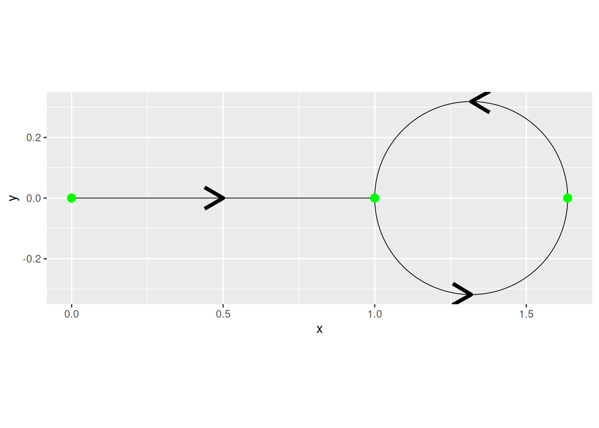

Simple test from Statistical paper
Last modified: 06-04-2026.
Go back to the Contents page.
Press Show to reveal the code chunks.
# Create a clipboard button on the rendeblack HTML page
source(here::here("clipboard.R")); clipboard# Set seed for reproducibility
set.seed(1982)
# Set global options for all code chunks
knitr::opts_chunk$set(
# Disable messages printed by R code chunks
message = FALSE,
# Disable warnings printed by R code chunks
warning = FALSE,
# Show R code within code chunks in output
echo = TRUE,
# Include both R code and its results in output
include = TRUE,
# Evaluate R code chunks
eval = TRUE,
# Enable caching of R code chunks for faster rendering
cache = FALSE,
# Align figures in the center of the output
fig.align = "center",
# Enable retina display for high-resolution figures
retina = 2,
# Show errors in the output instead of stopping rendering
error = TRUE,
# Do not collapse code and output into a single block
collapse = FALSE
)
# Start the figure counter
fig_count <- 0
# Define the captioner function
captioner <- function(caption) {
fig_count <<- fig_count + 1
paste0("Figure ", fig_count, ": ", caption)
}library(Matrix)
library(MetricGraph)
library(ggplot2)
library(reshape2)
library(dplyr)
library(viridis)
library(plotly)
library(patchwork)
library(slackr)
source("keys.R")
slackr_setup(token = token) # token comes from keys.R## [1] "Successfully connected to Slack"capture.output(
knitr::purl(here::here("all_functions.Rmd"), output = here::here("all_functions.R")),
file = here::here("old/purl_log.txt")
)
capture.output(
knitr::purl(here::here("matern_functions.Rmd"), output = here::here("matern_functions.R")),
file = here::here("old/purl_log.txt")
)
source(here::here("all_functions.R"))
source(here::here("matern_functions.R"))1 Case \(\alpha=1\)
1.1 \(\mathbf{K}\) and \(\mathbf{T}\) by hand
theta1 <- seq(from=pi,to=0,length.out = 1000)
theta2 <- seq(from=-pi,to=0,length.out = 1000)
edge1 <- cbind(1/pi+cos(theta1)/pi,sin(theta1)/pi)
edge2 <- rbind(c(0,0),c(2/pi,0))
edge3 <- cbind(1/pi+cos(theta2)/pi,sin(theta2)/pi)
edges <- list(edge1, edge2, edge3)
graph <- metric_graph$new(edges = edges)
graph$set_manual_edge_lengths(edge_lengths = c(1,2/pi,1))
kappa <- 4
sigma <- 1
alpha <- 1
m <- 4
nu <- alpha - 0.5
tau <- sqrt(gamma(nu) / (sigma^2 * kappa^(2*nu) * (4*pi)^(1/2) * gamma(nu + 1/2)))
K <- buildKirchooffConditioningMatrixCaseAlphaEqualOne(graph)
TT <- matrix(c(
1, 0, -1, 0, 0, 0,
0, 1, 0, -1, 0, 0,
0, 0, 1, 0, -1, 0,
0, 0, 0, 1, 0, -1,
1, 0, 1, 0, 1, 0,
0, 1, 0, 1, 0, 1
), nrow = 6, byrow = TRUE)
TT <- rbind(K, matrix(c(
1, 0, 1, 0, 1, 0,
0, 1, 0, 1, 0, 1
), nrow = 2, byrow = TRUE))
fa <- floor(alpha)
ca <- ceiling(alpha)
r00 <- matern.p.joint(
s = 0,
t = 0,
kappa = kappa,
p = 0,
alpha = alpha)
# compute r_(0,0)^(-1)
r00_inverse <- solve(r00, Diagonal(ca))
# define zero block
zero_block <- matrix(0, ca, ca)
# build correction term
correction_term <- rbind(
cbind(r00_inverse, zero_block),
cbind(zero_block, r00_inverse))
L_e <- graph$edge_lengths
Qtilde_e <- list()
for(e in 1:length(L_e)){
# compute Q_{i,e}
Q_e <- matern.p.precision(
loc = c(0, L_e[e]),
kappa = kappa,
p = 0,
equally_spaced = FALSE,
alpha = alpha)$Q
# store Qtilde_{i,e}
Qtilde_e[[e]] <- Q_e - 0.5 * correction_term
}
Q_tilde <- bdiag(Qtilde_e)
Q_tilde_star <- TT %*% Q_tilde %*% t(TT)
A <- matrix(c(1,0,0,0,0,0,
0,1,0,0,0,0), nrow = 2, ncol = 6, byrow = TRUE)
A <- buildMatrixAWhichMapsUToUv(graph, alpha)$A
T_U <- TT[5:6,]
Q_tilde_star_UU <- Q_tilde_star[5:6, 5:6]
Sigma_build <- A %*% t(T_U) %*% solve(Q_tilde_star_UU, T_U %*% t(A))
vertex_loc <- graph$V %>%
as.data.frame() %>%
rename(coord_x = X, coord_y = Y) %>%
mutate(dummy = 1)
# add mesh locations as observations
graph$add_observations(
data = vertex_loc,
coord_x = "coord_x",
coord_y = "coord_y",
data_coords = "spatial",
)## $removed
## [1] coord_x coord_y dummy
## <0 rows> (or 0-length row.names)# add observations as vertices
graph$observation_to_vertex()
Approx_Sigma <- rat_covariance(
graph = graph,
kappa = kappa,
tau = tau,
alpha = alpha,
m = m)
Approx_Sigma## 2 x 2 sparse Matrix of class "dgCMatrix"
##
## [1,] 0.66755755 0.05116153
## [2,] 0.05116153 0.66755755## 2 x 2 sparse Matrix of class "dgCMatrix"
##
## [1,] 0.66755755 0.05116153
## [2,] 0.05116153 0.66755755
## [1] 3.469447e-17## 4 x 6 sparse Matrix of class "dgCMatrix"
##
## [1,] 1 . -1 . . .
## [2,] . . 1 . -1 .
## [3,] . 1 . -1 . .
## [4,] . . . 1 . -1## 4 x 6 sparse Matrix of class "dgCMatrix"
##
## [1,] 1 . -1 . . .
## [2,] . . 1 . -1 .
## [3,] . 1 . -1 . .
## [4,] . . . 1 . -1## 4 x 6 sparse Matrix of class "dgCMatrix"
##
## [1,] 1 . -1 . . .
## [2,] . . 1 . -1 .
## [3,] . 1 . -1 . .
## [4,] . . . 1 . -1U <- graph$CoB$U
TT <- graph$CoB$T
s <- graph$CoB$S
S_mat <- matrix(0, ncol(U), ncol(TT))
diag(S_mat) <- s
sum(graph$C- round(U %*% S_mat %*% TT,1))## [1] 0## [1] 6
## attr(,"method")
## [1] "tolNorm2"
## attr(,"useGrad")
## [1] FALSE
## attr(,"tol")
## [1] 2.664535e-151.2 \(\mathbf{K}\) and \(\mathbf{T}\) by using CoB
theta1 <- seq(from=pi,to=0,length.out = 1000)
theta2 <- seq(from=-pi,to=0,length.out = 1000)
edge1 <- cbind(1/pi+cos(theta1)/pi,sin(theta1)/pi)
edge2 <- rbind(c(0,0),c(2/pi,0))
edge3 <- cbind(1/pi+cos(theta2)/pi,sin(theta2)/pi)
edges <- list(edge1, edge2, edge3)
graph <- metric_graph$new(edges = edges)
graph$set_manual_edge_lengths(edge_lengths = c(1,2/pi,1))
kappa <- 4
sigma <- 1
alpha <- 1
m <- 4
nu <- alpha - 0.5
tau <- sqrt(gamma(nu) / (sigma^2 * kappa^(2*nu) * (4*pi)^(1/2) * gamma(nu + 1/2)))
Q_tilde <- computesListOfMatricesQTildeUnconstraint(p = 0,
kappa = kappa,
alpha = alpha,
edgeLengths = graph$edge_lengths)[[1]]
K <- buildKirchooffConditioningMatrixCaseAlphaEqualOne(graph)
CoB <- MetricGraph:::c_basis2(K)
CoB$T <- t(CoB$T)
TT <- CoB$T[-c(1:length(CoB$S)), ]
Q_tilde_star <- TT %*% Q_tilde %*% t(TT)
vertex_loc <- graph$V %>%
as.data.frame() %>%
rename(coord_x = X, coord_y = Y) %>%
mutate(dummy = 1)
# add mesh locations as observations
graph$add_observations(
data = vertex_loc,
coord_x = "coord_x",
coord_y = "coord_y",
data_coords = "spatial",
)## $removed
## [1] coord_x coord_y dummy
## <0 rows> (or 0-length row.names)# add observations as vertices
graph$observation_to_vertex()
#index.obs_i <- gives.indices(graph = graph, factor = 4, constant = 2)
index.obs_i <- indicesForOrderedVertices(graph, alpha)
A <- t(TT)[index.obs_i, ]
Q_tilde_star_UU <- Q_tilde_star
Sigma_build <- A %*% solve(Q_tilde_star_UU, t(A))
Approx_Sigma <- rat_covariance(
graph = graph,
kappa = kappa,
tau = tau,
alpha = alpha,
m = m)
Approx_Sigma## 2 x 2 sparse Matrix of class "dgCMatrix"
##
## [1,] 0.66755755 0.05116153
## [2,] 0.05116153 0.66755755## 2 x 2 sparse Matrix of class "dgCMatrix"
##
## [1,] 0.66755755 0.05116153
## [2,] 0.05116153 0.66755755## [1] -1.040834e-162 Case \(\alpha=2\)
h <- 1
kappa <- 4
sigma <- 1
alpha <- 2
m <- 4
nu <- alpha - 0.5
tau <- sqrt(gamma(nu) / (sigma^2 * kappa^(2*nu) * (4*pi)^(1/2) * gamma(nu + 1/2)))
# build a graph with a mesh
graph_initial <- gets.graph.tadpole(flip_edge = FALSE)
graph <- graph_initial$clone()
graph_initial$build_mesh(h = h)
mesh_XY <- graph_initial$mesh$V %>% as.data.frame()
mesh_locations <- graph_initial$get_mesh_locations() %>%
as.data.frame() %>%
mutate(dummy = 1) %>%
rename(edge_number = V1, distance_on_edge = V2)
# add mesh locations as observations
graph$add_observations(
data = mesh_locations,
normalized = TRUE)
# add observations as vertices
graph$observation_to_vertex()
data <- graph$get_data()
order <- data %>%
as.data.frame() %>%
select(.coord_x, .coord_y) %>%
rename(X = .coord_x, Y = .coord_y)
Approx_Sigma <- rat_covariance(
graph = graph,
kappa = kappa,
tau = tau,
alpha = alpha,
m = m)
digits <- 10
idx <- match(
paste(round(mesh_XY$X, digits), round(mesh_XY$Y, digits)),
paste(round(order$X, digits), round(order$Y, digits))
)
Approx_Sigma <- Approx_Sigma[idx, idx]
# 1. Define Column Names (extracted from your LaTeX)
col_labels <- c(
"u1(e1_low)", "u'1(e1_low)", "u1(e1_high)", "u'1(e1_high)",
"u2(e2_low)", "u'2(e2_low)", "u2(e2_high)", "u'2(e2_high)",
"u3(e3_low)", "u'3(e3_low)", "u3(e3_high)", "u'3(e3_high)"
)
# 2. Create Matrix K
K <- matrix(c(
0, 0, 1, 0, -1, 0, 0, 0, 0, 0, 0, 0,
0, 0, 0, 0, 1, 0, 0, 0, 0, 0, -1, 0,
0, 0, 0, 0, 0, 0, 1, 0, -1, 0, 0, 0,
0, 1, 0, 0, 0, 0, 0, 0, 0, 0, 0, 0,
0, 0, 0, -1, 0, 1, 0, 0, 0, 0, 0, -1,
0, 0, 0, 0, 0, 0, 0, -1, 0, 1, 0, 0
), nrow = 6, byrow = TRUE)
#K <- as(K, "sparseMatrix")
# 3. Create Matrix L
L <- matrix(c(
1, 0, 0, 0, 0, 0, 0, 0, 0, 0, 0, 0,
0, 0, 1, 0, 1, 0, 0, 0, 0, 0, 1, 0,
0, 0, 0, 0, 0, 0, 1, 0, 1, 0, 0, 0,
0, 0, 0, 1, 0, 1, 0, 0, 0, 0, 0, 0,
0, 0, 0, 0, 0, 0, 0, 1, 0, 1, 0, 0,
0, 0, 0, 0, 0, 1, 0, 0, 0, 0, 0, 1
), nrow = 6, byrow = TRUE)
#L <- as(L, "sparseMatrix")
# 4. Combine K and L vertically
TT <- rbind(K, L)
# Add column names for clarity
colnames(TT) <- col_labels
fa <- floor(alpha)
ca <- ceiling(alpha)
r00 <- matern.p.joint(
s = 0,
t = 0,
kappa = kappa,
p = 0,
alpha = alpha)
# compute r_(0,0)^(-1)
r00_inverse <- solve(r00, Diagonal(ca))
# define zero block
zero_block <- matrix(0, ca, ca)
# build correction term
correction_term <- rbind(
cbind(r00_inverse, zero_block),
cbind(zero_block, r00_inverse))
L_e <- graph$edge_lengths
Qtilde_e <- list()
for(e in 1:length(L_e)){
# compute Q_{i,e}
Q_e <- matern.p.precision(
loc = c(0, L_e[e]),
kappa = kappa,
p = 0,
equally_spaced = FALSE,
alpha = alpha)$Q
# store Qtilde_{i,e}
Qtilde_e[[e]] <- Q_e - 0.5 * correction_term
}
Q_tilde <- bdiag(Qtilde_e)
Q_tilde_star <- TT %*% Q_tilde %*% t(TT)
A <- matrix(c(1,0,0,0,0,0,0,0,0,0,0,0,
0,0,1,0,0,0,0,0,0,0,0,0,
0,0,0,0,0,0,1,0,0,0,0,0), nrow = 3, ncol = 12, byrow = TRUE)
A <- buildMatrixAWhichMapsUToUv(graph, alpha)$A
S <- sparseMatrix(
i = 1:6,
j = 7:12,
x = 1,
dims = c(6, 12)
)
T_U <- S %*% TT #TT[7:12,]
Q_tilde_star_UU <- S %*% Q_tilde_star %*% t(S) #Q_tilde_star[7:12, 7:12]
Sigma_build <- A %*% t(T_U) %*% solve(Q_tilde_star_UU, T_U %*% t(A))
Approx_Sigma## 3 x 3 sparse Matrix of class "dgCMatrix"
##
## [1,] 1.995982100 0.1222108 0.008051106
## [2,] 0.122210817 0.6706948 0.122210817
## [3,] 0.008051106 0.1222108 1.002016603## 3 x 3 Matrix of class "dgeMatrix"
## [,1] [,2] [,3]
## [1,] 1.995982100 0.1222108 0.008051106
## [2,] 0.122210817 0.6706948 0.122210817
## [3,] 0.008051106 0.1222108 1.002016603
## [1] -1.429412e-15## 6 x 12 sparse Matrix of class "dgCMatrix"
##
## [1,] . . 1 . -1 . . . . . . .
## [2,] . . . . 1 . . . . . -1 .
## [3,] . . . . . . 1 . -1 . . .
## [4,] . 1 . . . . . . . . . .
## [5,] . . . -1 . 1 . . . . . -1
## [6,] . . . . . . . -1 . 1 . .## 6 x 12 sparse Matrix of class "dgCMatrix"
##
## [1,] . 1 . . . . . . . . . .
## [2,] . . . -1 . 1 . . . . . -1
## [3,] . . -1 . 1 . . . . . . .
## [4,] . . 1 . . . . . . . -1 .
## [5,] . . . . . . . -1 . 1 . .
## [6,] . . . . . . -1 . 1 . . .## 9 x 18 sparse Matrix of class "dgCMatrix"
##
## [1,] . 1 . . . . . . . . . . . . . . . .
## [2,] . . . . -1 . . 1 . . . . . . . . -1 .
## [3,] . . . -1 . . 1 . . . . . . . . . . .
## [4,] . . . 1 . . . . . . . . . . . -1 . .
## [5,] . . . . . . . . . . -1 . . 1 . . . .
## [6,] . . . . . . . . . -1 . . 1 . . . . .
## [7,] . . . . . 1 . . -1 . . . . . . . . .
## [8,] . . . . . . . . 1 . . . . . . . . -1
## [9,] . . . . . . . . . . . 1 . . -1 . . .## function (alpha = 2, edge_constraint = FALSE)
## {
## if (alpha == 2) {
## temp_E <- self$E
## temp_E[] <- as.integer(temp_E)
## self$C <- construct_constraint_matrix(temp_E, as.integer(self$nV),
## as.integer(edge_constraint))
## self$CoB <- c_basis2(self$C)
## self$CoB$T <- t(self$CoB$T)
## self$CoB$alpha <- 2
## }
## else {
## error("only alpha=2 implemented")
## }
## }
## <environment: 0x60d75a954c58>## 6 x 12 sparse Matrix of class "dgCMatrix"
##
## [1,] . 1 . . . . . . . . . .
## [2,] . . . -1 . 1 . . . . . -1
## [3,] . . -1 . 1 . . . . . . .
## [4,] . . 1 . . . . . . . -1 .
## [5,] . . . . . . . -1 . 1 . .
## [6,] . . . . . . -1 . 1 . . .## 6 x 12 sparse Matrix of class "dgCMatrix"
##
## [1,] . 1 . . . . . . . . . .
## [2,] . . . -0.577 . 0.577 . . . . . -0.577
## [3,] . . -0.816 . 0.408 . . . . . 0.408 .
## [4,] . . 0.000 . -0.707 . . . . . 0.707 .
## [5,] . . . . . . . -0.707 . 0.707 . .
## [6,] . . . . . . -0.707 . 0.707 . . .## function (A, eps_limit = 1e-10)
## {
## .Call(`_MetricGraph_c_basis2`, A, eps_limit)
## }
## <bytecode: 0x60d759a5a5a8>
## <environment: namespace:MetricGraph>h <- 0.5
kappa <- 4
sigma <- 1
alpha <- 2
m <- 4
nu <- alpha - 0.5
tau <- sqrt(gamma(nu) / (sigma^2 * kappa^(2*nu) * (4*pi)^(1/2) * gamma(nu + 1/2)))
theta1 <- seq(from=pi,to=0,length.out = 1000)
theta2 <- seq(from=-pi,to=0,length.out = 1000)
edge1 <- cbind(1/pi+cos(theta1)/pi,sin(theta1)/pi)
edge2 <- rbind(c(0,0),c(2/pi,0))
edge3 <- cbind(1/pi+cos(theta2)/pi,sin(theta2)/pi)
edges <- list(edge1, edge2, edge3)
graph_initial <- metric_graph$new(edges = edges)
graph_initial$set_manual_edge_lengths(edge_lengths = c(1,2/pi,1))
graph <- graph_initial$clone()
graph_initial$build_mesh(h = h)
mesh_XY <- graph_initial$mesh$V %>% as.data.frame()
mesh_locations <- graph_initial$get_mesh_locations() %>%
as.data.frame() %>%
mutate(dummy = 1) %>%
rename(edge_number = V1, distance_on_edge = V2)
# add mesh locations as observations
graph$add_observations(
data = mesh_locations,
normalized = TRUE)
# add observations as vertices
graph$observation_to_vertex()
Q_unconstraint <- MetricGraph:::Qalpha2(theta = c(tau, kappa),
graph = graph,
BC = 3000,
build = TRUE)
graph$buildC(alpha = alpha, edge_constraint = TRUE) # should always be TRUE
COND <- graph$CoB
Tc <- COND$T[-c(1:length(COND$S)), ]
Q_U <- Tc %*% Q_unconstraint %*% t(Tc)
factor <- 4
constant <- 3
#index.obs_i <- gives.indices(graph = graph, factor = factor, constant = constant)
index.obs_i <- indicesForOrderedVertices(graph, alpha)
A <- t(Tc)[index.obs_i, ]
Sigma <- A %*% solve(Q_U, t(A))
Sigma## 5 x 5 sparse Matrix of class "dgCMatrix"
##
## [1,] 0.6748614 0.3011640 0.2054843 0.4315462 0.3011640
## [2,] 0.3011640 0.9517275 0.3011640 0.2103182 0.1290015
## [3,] 0.2054843 0.3011640 0.6748614 0.4315462 0.3011640
## [4,] 0.4315462 0.2103182 0.4315462 0.8409395 0.2103182
## [5,] 0.3011640 0.1290015 0.3011640 0.2103182 0.9517275LS0tCnRpdGxlOiAiU2ltcGxlIHRlc3QgZnJvbSBTdGF0aXN0aWNhbCBwYXBlciIKZGF0ZTogIkxhc3QgbW9kaWZpZWQ6IGByIGZvcm1hdChTeXMudGltZSgpLCAnJWQtJW0tJVkuJylgIgpvdXRwdXQ6CiAgaHRtbF9kb2N1bWVudDoKICAgIG1hdGhqYXg6ICJodHRwczovL2Nkbi5qc2RlbGl2ci5uZXQvbnBtL21hdGhqYXhAMy9lczUvdGV4LW1tbC1jaHRtbC5qcyIKICAgIGhpZ2hsaWdodDogcHlnbWVudHMKICAgIHRoZW1lOiBmbGF0bHkKICAgIGNvZGVfZm9sZGluZzogaGlkZSAjIGNsYXNzLnNvdXJjZSA9ICJmb2xkLWhpZGUiIHRvIGhpZGUgY29kZSBhbmQgYWRkIGEgYnV0dG9uIHRvIHNob3cgaXQKICAgIGRmX3ByaW50OiBwYWdlZAogICAgdG9jOiB0cnVlCiAgICB0b2NfZmxvYXQ6CiAgICAgIGNvbGxhcHNlZDogdHJ1ZQogICAgICBzbW9vdGhfc2Nyb2xsOiB0cnVlCiAgICBudW1iZXJfc2VjdGlvbnM6IHRydWUKICAgIGZpZ19jYXB0aW9uOiB0cnVlCiAgICBjb2RlX2Rvd25sb2FkOiB0cnVlCiAgICBjc3M6IHZpc3VhbC5jc3MKYWx3YXlzX2FsbG93X2h0bWw6IHRydWUKYmlibGlvZ3JhcGh5OiAKICAtIHJlZmVyZW5jZXMuYmliCiAgLSBncmF0ZWZ1bC1yZWZzLmJpYgpoZWFkZXItaW5jbHVkZXM6CiAgLSBcbmV3Y29tbWFuZHtcYXJ9e1xtYXRoYmJ7Un19CiAgLSBcbmV3Y29tbWFuZHtcbGxhdn1bMV17XGxlZnRceyMxXHJpZ2h0XH19CiAgLSBcbmV3Y29tbWFuZHtccGFyZX1bMV17XGxlZnQoIzFccmlnaHQpfQogIC0gXG5ld2NvbW1hbmR7XE5jYWx9e1xtYXRoY2Fse059fQogIC0gXG5ld2NvbW1hbmR7XFZjYWx9e1xtYXRoY2Fse1Z9fQogIC0gXG5ld2NvbW1hbmR7XEVjYWx9e1xtYXRoY2Fse0V9fQogIC0gXG5ld2NvbW1hbmR7XFdjYWx9e1xtYXRoY2Fse1d9fQogIC0gXG5ld2NvbW1hbmR7XGFsbW9zdGV2ZXJ5d2hlcmV9e1xtYXRocm17YS5lLn1cO30KLS0tCgpHbyBiYWNrIHRvIHRoZSBbQ29udGVudHNdKGFib3V0Lmh0bWwpIHBhZ2UuCgo8ZGl2IHN0eWxlPSJjb2xvcjogIzJjM2U1MDsgdGV4dC1hbGlnbjogcmlnaHQ7Ij4KKioqKioqKiogIAo8c3Ryb25nPlByZXNzIFNob3cgdG8gcmV2ZWFsIHRoZSBjb2RlIGNodW5rcy48L3N0cm9uZz4gIAoKKioqKioqKioKPC9kaXY+CgoKYGBge3J9CiMgQ3JlYXRlIGEgY2xpcGJvYXJkIGJ1dHRvbiBvbiB0aGUgcmVuZGVibGFjayBIVE1MIHBhZ2UKc291cmNlKGhlcmU6OmhlcmUoImNsaXBib2FyZC5SIikpOyBjbGlwYm9hcmQKIyBTZXQgc2VlZCBmb3IgcmVwcm9kdWNpYmlsaXR5CnNldC5zZWVkKDE5ODIpIAojIFNldCBnbG9iYWwgb3B0aW9ucyBmb3IgYWxsIGNvZGUgY2h1bmtzCmtuaXRyOjpvcHRzX2NodW5rJHNldCgKICAjIERpc2FibGUgbWVzc2FnZXMgcHJpbnRlZCBieSBSIGNvZGUgY2h1bmtzCiAgbWVzc2FnZSA9IEZBTFNFLCAgICAKICAjIERpc2FibGUgd2FybmluZ3MgcHJpbnRlZCBieSBSIGNvZGUgY2h1bmtzCiAgd2FybmluZyA9IEZBTFNFLCAgICAKICAjIFNob3cgUiBjb2RlIHdpdGhpbiBjb2RlIGNodW5rcyBpbiBvdXRwdXQKICBlY2hvID0gVFJVRSwgICAgICAgIAogICMgSW5jbHVkZSBib3RoIFIgY29kZSBhbmQgaXRzIHJlc3VsdHMgaW4gb3V0cHV0CiAgaW5jbHVkZSA9IFRSVUUsICAgICAKICAjIEV2YWx1YXRlIFIgY29kZSBjaHVua3MKICBldmFsID0gVFJVRSwgICAgICAgCiAgIyBFbmFibGUgY2FjaGluZyBvZiBSIGNvZGUgY2h1bmtzIGZvciBmYXN0ZXIgcmVuZGVyaW5nCiAgY2FjaGUgPSBGQUxTRSwgICAgICAKICAjIEFsaWduIGZpZ3VyZXMgaW4gdGhlIGNlbnRlciBvZiB0aGUgb3V0cHV0CiAgZmlnLmFsaWduID0gImNlbnRlciIsCiAgIyBFbmFibGUgcmV0aW5hIGRpc3BsYXkgZm9yIGhpZ2gtcmVzb2x1dGlvbiBmaWd1cmVzCiAgcmV0aW5hID0gMiwKICAjIFNob3cgZXJyb3JzIGluIHRoZSBvdXRwdXQgaW5zdGVhZCBvZiBzdG9wcGluZyByZW5kZXJpbmcKICBlcnJvciA9IFRSVUUsCiAgIyBEbyBub3QgY29sbGFwc2UgY29kZSBhbmQgb3V0cHV0IGludG8gYSBzaW5nbGUgYmxvY2sKICBjb2xsYXBzZSA9IEZBTFNFCikKIyBTdGFydCB0aGUgZmlndXJlIGNvdW50ZXIKZmlnX2NvdW50IDwtIDAKIyBEZWZpbmUgdGhlIGNhcHRpb25lciBmdW5jdGlvbgpjYXB0aW9uZXIgPC0gZnVuY3Rpb24oY2FwdGlvbikgewogIGZpZ19jb3VudCA8PC0gZmlnX2NvdW50ICsgMQogIHBhc3RlMCgiRmlndXJlICIsIGZpZ19jb3VudCwgIjogIiwgY2FwdGlvbikKfQoKYGBgCgpgYGB7ciwgZXZhbCA9IFRSVUV9CmxpYnJhcnkoTWF0cml4KQpsaWJyYXJ5KE1ldHJpY0dyYXBoKQpsaWJyYXJ5KGdncGxvdDIpCmxpYnJhcnkocmVzaGFwZTIpCmxpYnJhcnkoZHBseXIpCmxpYnJhcnkodmlyaWRpcykKbGlicmFyeShwbG90bHkpCmxpYnJhcnkocGF0Y2h3b3JrKQpsaWJyYXJ5KHNsYWNrcikKc291cmNlKCJrZXlzLlIiKQpzbGFja3Jfc2V0dXAodG9rZW4gPSB0b2tlbikgIyB0b2tlbiBjb21lcyBmcm9tIGtleXMuUgpgYGAKCgpgYGB7cn0KY2FwdHVyZS5vdXRwdXQoCiAga25pdHI6OnB1cmwoaGVyZTo6aGVyZSgiYWxsX2Z1bmN0aW9ucy5SbWQiKSwgb3V0cHV0ID0gaGVyZTo6aGVyZSgiYWxsX2Z1bmN0aW9ucy5SIikpLAogIGZpbGUgPSBoZXJlOjpoZXJlKCJvbGQvcHVybF9sb2cudHh0IikKKQpjYXB0dXJlLm91dHB1dCgKICBrbml0cjo6cHVybChoZXJlOjpoZXJlKCJtYXRlcm5fZnVuY3Rpb25zLlJtZCIpLCBvdXRwdXQgPSBoZXJlOjpoZXJlKCJtYXRlcm5fZnVuY3Rpb25zLlIiKSksCiAgZmlsZSA9IGhlcmU6OmhlcmUoIm9sZC9wdXJsX2xvZy50eHQiKQopCgpzb3VyY2UoaGVyZTo6aGVyZSgiYWxsX2Z1bmN0aW9ucy5SIikpCnNvdXJjZShoZXJlOjpoZXJlKCJtYXRlcm5fZnVuY3Rpb25zLlIiKSkKYGBgCgoKCgoKIyBDYXNlICRcYWxwaGE9MSQKCgoKIyMgJFxtYXRoYmZ7S30kIGFuZCAkXG1hdGhiZntUfSQgYnkgaGFuZAoKCmBgYHtyfQp0aGV0YTEgPC0gc2VxKGZyb209cGksdG89MCxsZW5ndGgub3V0ID0gMTAwMCkKdGhldGEyIDwtIHNlcShmcm9tPS1waSx0bz0wLGxlbmd0aC5vdXQgPSAxMDAwKQoKZWRnZTEgPC0gY2JpbmQoMS9waStjb3ModGhldGExKS9waSxzaW4odGhldGExKS9waSkKZWRnZTIgPC0gcmJpbmQoYygwLDApLGMoMi9waSwwKSkKZWRnZTMgPC0gY2JpbmQoMS9waStjb3ModGhldGEyKS9waSxzaW4odGhldGEyKS9waSkKZWRnZXMgPC0gbGlzdChlZGdlMSwgZWRnZTIsIGVkZ2UzKQpncmFwaCA8LSBtZXRyaWNfZ3JhcGgkbmV3KGVkZ2VzID0gZWRnZXMpCmdyYXBoJHNldF9tYW51YWxfZWRnZV9sZW5ndGhzKGVkZ2VfbGVuZ3RocyA9IGMoMSwyL3BpLDEpKQoKa2FwcGEgPC0gNApzaWdtYSA8LSAxCmFscGhhIDwtIDEKbSA8LSA0Cm51IDwtIGFscGhhIC0gMC41CnRhdSA8LSBzcXJ0KGdhbW1hKG51KSAvIChzaWdtYV4yICoga2FwcGFeKDIqbnUpICogKDQqcGkpXigxLzIpICogZ2FtbWEobnUgKyAxLzIpKSkKCksgPC0gYnVpbGRLaXJjaG9vZmZDb25kaXRpb25pbmdNYXRyaXhDYXNlQWxwaGFFcXVhbE9uZShncmFwaCkKClRUIDwtIG1hdHJpeChjKAogIDEsIDAsIC0xLCAgMCwgIDAsICAwLAogIDAsIDEsICAwLCAtMSwgIDAsICAwLAogIDAsIDAsICAxLCAgMCwgLTEsICAwLAogIDAsIDAsICAwLCAgMSwgIDAsIC0xLAogIDEsIDAsICAxLCAgMCwgIDEsICAwLAogIDAsIDEsICAwLCAgMSwgIDAsICAxCiksIG5yb3cgPSA2LCBieXJvdyA9IFRSVUUpCgoKVFQgPC0gcmJpbmQoSywgbWF0cml4KGMoCiAgMSwgMCwgIDEsICAwLCAgMSwgIDAsCiAgMCwgMSwgIDAsICAxLCAgMCwgIDEKKSwgbnJvdyA9IDIsIGJ5cm93ID0gVFJVRSkpCgoKZmEgPC0gZmxvb3IoYWxwaGEpCmNhIDwtIGNlaWxpbmcoYWxwaGEpCgpyMDAgPC0gbWF0ZXJuLnAuam9pbnQoCiAgICAgIHMgPSAwLCAKICAgICAgdCA9IDAsIAogICAgICBrYXBwYSA9IGthcHBhLCAKICAgICAgcCA9IDAsIAogICAgICBhbHBoYSA9IGFscGhhKQogICAgCiMgY29tcHV0ZSByXygwLDApXigtMSkKcjAwX2ludmVyc2UgPC0gc29sdmUocjAwLCBEaWFnb25hbChjYSkpCgojIGRlZmluZSB6ZXJvIGJsb2NrIAp6ZXJvX2Jsb2NrIDwtIG1hdHJpeCgwLCBjYSwgY2EpCgojIGJ1aWxkIGNvcnJlY3Rpb24gdGVybQpjb3JyZWN0aW9uX3Rlcm0gPC0gcmJpbmQoCiAgY2JpbmQocjAwX2ludmVyc2UsIHplcm9fYmxvY2spLAogIGNiaW5kKHplcm9fYmxvY2ssIHIwMF9pbnZlcnNlKSkKCkxfZSA8LSBncmFwaCRlZGdlX2xlbmd0aHMKUXRpbGRlX2UgPC0gbGlzdCgpCgpmb3IoZSBpbiAxOmxlbmd0aChMX2UpKXsKICAKICAjIGNvbXB1dGUgUV97aSxlfQogIFFfZSA8LSBtYXRlcm4ucC5wcmVjaXNpb24oCiAgICBsb2MgPSBjKDAsIExfZVtlXSksCiAgICBrYXBwYSA9IGthcHBhLCAKICAgIHAgPSAwLAogICAgZXF1YWxseV9zcGFjZWQgPSBGQUxTRSwgCiAgICBhbHBoYSA9IGFscGhhKSRRCiAgCiAgIyBzdG9yZSBRdGlsZGVfe2ksZX0KICBRdGlsZGVfZVtbZV1dIDwtIFFfZSAtIDAuNSAqIGNvcnJlY3Rpb25fdGVybQp9CgpRX3RpbGRlIDwtIGJkaWFnKFF0aWxkZV9lKQoKUV90aWxkZV9zdGFyIDwtIFRUICUqJSBRX3RpbGRlICUqJSB0KFRUKQoKQSA8LSBtYXRyaXgoYygxLDAsMCwwLDAsMCwKICAgICAgICAgICAgICAwLDEsMCwwLDAsMCksIG5yb3cgPSAyLCBuY29sID0gNiwgYnlyb3cgPSBUUlVFKQoKQSA8LSBidWlsZE1hdHJpeEFXaGljaE1hcHNVVG9VdihncmFwaCwgYWxwaGEpJEEKClRfVSA8LSBUVFs1OjYsXQoKUV90aWxkZV9zdGFyX1VVIDwtIFFfdGlsZGVfc3Rhcls1OjYsIDU6Nl0KClNpZ21hX2J1aWxkIDwtIEEgJSolIHQoVF9VKSAlKiUgc29sdmUoUV90aWxkZV9zdGFyX1VVLCBUX1UgJSolIHQoQSkpCgoKdmVydGV4X2xvYyA8LSBncmFwaCRWICU+JSAKICBhcy5kYXRhLmZyYW1lKCkgJT4lCiAgcmVuYW1lKGNvb3JkX3ggPSBYLCBjb29yZF95ID0gWSkgJT4lCiAgbXV0YXRlKGR1bW15ID0gMSkKCiMgYWRkIG1lc2ggbG9jYXRpb25zIGFzIG9ic2VydmF0aW9ucwpncmFwaCRhZGRfb2JzZXJ2YXRpb25zKAogIGRhdGEgPSB2ZXJ0ZXhfbG9jLAogIGNvb3JkX3ggPSAiY29vcmRfeCIsCiAgY29vcmRfeSA9ICJjb29yZF95IiwKICBkYXRhX2Nvb3JkcyA9ICJzcGF0aWFsIiwKICAgICkKCiMgYWRkIG9ic2VydmF0aW9ucyBhcyB2ZXJ0aWNlcwpncmFwaCRvYnNlcnZhdGlvbl90b192ZXJ0ZXgoKQoKCkFwcHJveF9TaWdtYSA8LSByYXRfY292YXJpYW5jZSgKICBncmFwaCA9IGdyYXBoLCAKICBrYXBwYSA9IGthcHBhLCAKICB0YXUgPSB0YXUsIAogIGFscGhhID0gYWxwaGEsIAogIG0gPSBtKQoKCkFwcHJveF9TaWdtYQoKU2lnbWFfYnVpbGQKCmdyYXBoJHBsb3QoZGlyZWN0aW9uID0gVFJVRSkKCnN1bShBcHByb3hfU2lnbWEtU2lnbWFfYnVpbGQpCmBgYAoKCmBgYHtyfQpidWlsZEtpcmNob29mZkNvbmRpdGlvbmluZ01hdHJpeENhc2VBbHBoYUVxdWFsT25lKGdyYXBoKQpUVFsxOjQsXQpncmFwaCRidWlsZEMoKQpncmFwaCRDW2MoMjozLDU6NiksYygxLDMsNSw3LDksMTEpXQoKClUgPC0gZ3JhcGgkQ29CJFUKVFQgPC0gZ3JhcGgkQ29CJFQKcyA8LSBncmFwaCRDb0IkUwoKU19tYXQgPC0gbWF0cml4KDAsIG5jb2woVSksIG5jb2woVFQpKQpkaWFnKFNfbWF0KSA8LSBzCgpzdW0oZ3JhcGgkQy0gcm91bmQoVSAlKiUgU19tYXQgJSolIFRULDEpKQpNYXRyaXg6OnJhbmtNYXRyaXgoZ3JhcGgkQykKYGBgCgoKCgojIyAkXG1hdGhiZntLfSQgYW5kICRcbWF0aGJme1R9JCBieSB1c2luZyBgQ29CYAoKCmBgYHtyfQp0aGV0YTEgPC0gc2VxKGZyb209cGksdG89MCxsZW5ndGgub3V0ID0gMTAwMCkKdGhldGEyIDwtIHNlcShmcm9tPS1waSx0bz0wLGxlbmd0aC5vdXQgPSAxMDAwKQoKZWRnZTEgPC0gY2JpbmQoMS9waStjb3ModGhldGExKS9waSxzaW4odGhldGExKS9waSkKZWRnZTIgPC0gcmJpbmQoYygwLDApLGMoMi9waSwwKSkKZWRnZTMgPC0gY2JpbmQoMS9waStjb3ModGhldGEyKS9waSxzaW4odGhldGEyKS9waSkKZWRnZXMgPC0gbGlzdChlZGdlMSwgZWRnZTIsIGVkZ2UzKQpncmFwaCA8LSBtZXRyaWNfZ3JhcGgkbmV3KGVkZ2VzID0gZWRnZXMpCmdyYXBoJHNldF9tYW51YWxfZWRnZV9sZW5ndGhzKGVkZ2VfbGVuZ3RocyA9IGMoMSwyL3BpLDEpKQoKa2FwcGEgPC0gNApzaWdtYSA8LSAxCmFscGhhIDwtIDEKbSA8LSA0Cm51IDwtIGFscGhhIC0gMC41CnRhdSA8LSBzcXJ0KGdhbW1hKG51KSAvIChzaWdtYV4yICoga2FwcGFeKDIqbnUpICogKDQqcGkpXigxLzIpICogZ2FtbWEobnUgKyAxLzIpKSkKCgpRX3RpbGRlIDwtIGNvbXB1dGVzTGlzdE9mTWF0cmljZXNRVGlsZGVVbmNvbnN0cmFpbnQocCA9IDAsCiAgICAgICAgICAgICAgICAgICAgICAgICAgICAgICAgICAgICAgICAgICAgICAgICAgICAga2FwcGEgPSBrYXBwYSwgCiAgICAgICAgICAgICAgICAgICAgICAgICAgICAgICAgICAgICAgICAgICAgICAgICAgICAgYWxwaGEgPSBhbHBoYSwgCiAgICAgICAgICAgICAgICAgICAgICAgICAgICAgICAgICAgICAgICAgICAgICAgICAgICAgZWRnZUxlbmd0aHMgPSBncmFwaCRlZGdlX2xlbmd0aHMpW1sxXV0KCgoKCksgPC0gYnVpbGRLaXJjaG9vZmZDb25kaXRpb25pbmdNYXRyaXhDYXNlQWxwaGFFcXVhbE9uZShncmFwaCkKQ29CIDwtIE1ldHJpY0dyYXBoOjo6Y19iYXNpczIoSykKQ29CJFQgPC0gdChDb0IkVCkKVFQgPC0gQ29CJFRbLWMoMTpsZW5ndGgoQ29CJFMpKSwgXQoKUV90aWxkZV9zdGFyIDwtIFRUICUqJSBRX3RpbGRlICUqJSB0KFRUKQoKCgoKdmVydGV4X2xvYyA8LSBncmFwaCRWICU+JSAKICBhcy5kYXRhLmZyYW1lKCkgJT4lCiAgcmVuYW1lKGNvb3JkX3ggPSBYLCBjb29yZF95ID0gWSkgJT4lCiAgbXV0YXRlKGR1bW15ID0gMSkKCiMgYWRkIG1lc2ggbG9jYXRpb25zIGFzIG9ic2VydmF0aW9ucwpncmFwaCRhZGRfb2JzZXJ2YXRpb25zKAogIGRhdGEgPSB2ZXJ0ZXhfbG9jLAogIGNvb3JkX3ggPSAiY29vcmRfeCIsCiAgY29vcmRfeSA9ICJjb29yZF95IiwKICBkYXRhX2Nvb3JkcyA9ICJzcGF0aWFsIiwKICAgICkKCiMgYWRkIG9ic2VydmF0aW9ucyBhcyB2ZXJ0aWNlcwpncmFwaCRvYnNlcnZhdGlvbl90b192ZXJ0ZXgoKQoKI2luZGV4Lm9ic19pIDwtIGdpdmVzLmluZGljZXMoZ3JhcGggPSBncmFwaCwgZmFjdG9yID0gNCwgY29uc3RhbnQgPSAyKQoKaW5kZXgub2JzX2kgPC0gaW5kaWNlc0Zvck9yZGVyZWRWZXJ0aWNlcyhncmFwaCwgYWxwaGEpCgogIApBIDwtIHQoVFQpW2luZGV4Lm9ic19pLCBdCgpRX3RpbGRlX3N0YXJfVVUgPC0gUV90aWxkZV9zdGFyCgpTaWdtYV9idWlsZCA8LSBBICUqJSAgc29sdmUoUV90aWxkZV9zdGFyX1VVLCB0KEEpKQoKCgoKCkFwcHJveF9TaWdtYSA8LSByYXRfY292YXJpYW5jZSgKICBncmFwaCA9IGdyYXBoLCAKICBrYXBwYSA9IGthcHBhLCAKICB0YXUgPSB0YXUsIAogIGFscGhhID0gYWxwaGEsIAogIG0gPSBtKQoKCkFwcHJveF9TaWdtYQoKU2lnbWFfYnVpbGQKCgpzdW0oQXBwcm94X1NpZ21hLVNpZ21hX2J1aWxkKQpgYGAKCgoKCgoKCgoKCgoKIyBDYXNlICRcYWxwaGE9MiQKCgoKCgpgYGB7cn0KaCA8LSAxCmthcHBhIDwtIDQKc2lnbWEgPC0gMQphbHBoYSA8LSAyCm0gPC0gNApudSA8LSBhbHBoYSAtIDAuNQp0YXUgPC0gc3FydChnYW1tYShudSkgLyAoc2lnbWFeMiAqIGthcHBhXigyKm51KSAqICg0KnBpKV4oMS8yKSAqIGdhbW1hKG51ICsgMS8yKSkpCgoKCiMgYnVpbGQgYSBncmFwaCB3aXRoIGEgbWVzaApncmFwaF9pbml0aWFsIDwtIGdldHMuZ3JhcGgudGFkcG9sZShmbGlwX2VkZ2UgPSBGQUxTRSkKZ3JhcGggPC0gZ3JhcGhfaW5pdGlhbCRjbG9uZSgpCgoKZ3JhcGhfaW5pdGlhbCRidWlsZF9tZXNoKGggPSBoKQoKCm1lc2hfWFkgPC0gZ3JhcGhfaW5pdGlhbCRtZXNoJFYgJT4lIGFzLmRhdGEuZnJhbWUoKQoKCm1lc2hfbG9jYXRpb25zIDwtIGdyYXBoX2luaXRpYWwkZ2V0X21lc2hfbG9jYXRpb25zKCkgJT4lIAogIGFzLmRhdGEuZnJhbWUoKSAlPiUgCiAgbXV0YXRlKGR1bW15ID0gMSkgJT4lCiAgcmVuYW1lKGVkZ2VfbnVtYmVyID0gVjEsIGRpc3RhbmNlX29uX2VkZ2UgPSBWMikKCiMgYWRkIG1lc2ggbG9jYXRpb25zIGFzIG9ic2VydmF0aW9ucwpncmFwaCRhZGRfb2JzZXJ2YXRpb25zKAogIGRhdGEgPSBtZXNoX2xvY2F0aW9ucywKICBub3JtYWxpemVkID0gVFJVRSkKCiMgYWRkIG9ic2VydmF0aW9ucyBhcyB2ZXJ0aWNlcwpncmFwaCRvYnNlcnZhdGlvbl90b192ZXJ0ZXgoKQoKCmRhdGEgPC0gZ3JhcGgkZ2V0X2RhdGEoKQoKb3JkZXIgPC0gZGF0YSAlPiUKICBhcy5kYXRhLmZyYW1lKCkgJT4lCiAgc2VsZWN0KC5jb29yZF94LCAuY29vcmRfeSkgJT4lCiAgcmVuYW1lKFggPSAuY29vcmRfeCwgWSA9IC5jb29yZF95KQoKQXBwcm94X1NpZ21hIDwtIHJhdF9jb3ZhcmlhbmNlKAogIGdyYXBoID0gZ3JhcGgsIAogIGthcHBhID0ga2FwcGEsIAogIHRhdSA9IHRhdSwgCiAgYWxwaGEgPSBhbHBoYSwgCiAgbSA9IG0pCgpkaWdpdHMgPC0gMTAKCmlkeCA8LSBtYXRjaCgKICBwYXN0ZShyb3VuZChtZXNoX1hZJFgsIGRpZ2l0cyksIHJvdW5kKG1lc2hfWFkkWSwgZGlnaXRzKSksCiAgcGFzdGUocm91bmQob3JkZXIkWCwgZGlnaXRzKSwgcm91bmQob3JkZXIkWSwgZGlnaXRzKSkKKQoKCkFwcHJveF9TaWdtYSA8LSBBcHByb3hfU2lnbWFbaWR4LCBpZHhdCgoKIyAxLiBEZWZpbmUgQ29sdW1uIE5hbWVzIChleHRyYWN0ZWQgZnJvbSB5b3VyIExhVGVYKQpjb2xfbGFiZWxzIDwtIGMoCiAgInUxKGUxX2xvdykiLCAidScxKGUxX2xvdykiLCAidTEoZTFfaGlnaCkiLCAidScxKGUxX2hpZ2gpIiwKICAidTIoZTJfbG93KSIsICJ1JzIoZTJfbG93KSIsICJ1MihlMl9oaWdoKSIsICJ1JzIoZTJfaGlnaCkiLAogICJ1MyhlM19sb3cpIiwgInUnMyhlM19sb3cpIiwgInUzKGUzX2hpZ2gpIiwgInUnMyhlM19oaWdoKSIKKQoKIyAyLiBDcmVhdGUgTWF0cml4IEsKSyA8LSBtYXRyaXgoYygKICAwLCAwLCAxLCAgMCwgLTEsIDAsICAwLCAwLCAgMCwgMCwgIDAsIDAsCiAgMCwgMCwgMCwgIDAsICAxLCAwLCAgMCwgMCwgIDAsIDAsIC0xLCAwLAogIDAsIDAsIDAsICAwLCAgMCwgMCwgIDEsIDAsIC0xLCAwLCAgMCwgMCwKICAwLCAxLCAwLCAgMCwgIDAsIDAsICAwLCAwLCAgMCwgMCwgIDAsIDAsCiAgMCwgMCwgMCwgLTEsICAwLCAxLCAgMCwgMCwgIDAsIDAsICAwLCAtMSwKICAwLCAwLCAwLCAgMCwgIDAsIDAsICAwLCAtMSwgMCwgMSwgIDAsIDAKKSwgbnJvdyA9IDYsIGJ5cm93ID0gVFJVRSkKCgojSyA8LSBhcyhLLCAic3BhcnNlTWF0cml4IikKIyAzLiBDcmVhdGUgTWF0cml4IEwKTCA8LSBtYXRyaXgoYygKICAxLCAwLCAwLCAwLCAwLCAwLCAwLCAwLCAwLCAwLCAwLCAwLAogIDAsIDAsIDEsIDAsIDEsIDAsIDAsIDAsIDAsIDAsIDEsIDAsCiAgMCwgMCwgMCwgMCwgMCwgMCwgMSwgMCwgMSwgMCwgMCwgMCwKICAwLCAwLCAwLCAxLCAwLCAxLCAwLCAwLCAwLCAwLCAwLCAwLAogIDAsIDAsIDAsIDAsIDAsIDAsIDAsIDEsIDAsIDEsIDAsIDAsCiAgMCwgMCwgMCwgMCwgMCwgMSwgMCwgMCwgMCwgMCwgMCwgMQopLCBucm93ID0gNiwgYnlyb3cgPSBUUlVFKQoKI0wgPC0gYXMoTCwgInNwYXJzZU1hdHJpeCIpCgojIDQuIENvbWJpbmUgSyBhbmQgTCB2ZXJ0aWNhbGx5ClRUIDwtIHJiaW5kKEssIEwpCgojIEFkZCBjb2x1bW4gbmFtZXMgZm9yIGNsYXJpdHkKY29sbmFtZXMoVFQpIDwtIGNvbF9sYWJlbHMKCgoKCgpmYSA8LSBmbG9vcihhbHBoYSkKY2EgPC0gY2VpbGluZyhhbHBoYSkKCnIwMCA8LSBtYXRlcm4ucC5qb2ludCgKICAgICAgcyA9IDAsIAogICAgICB0ID0gMCwgCiAgICAgIGthcHBhID0ga2FwcGEsIAogICAgICBwID0gMCwgCiAgICAgIGFscGhhID0gYWxwaGEpCiAgICAKIyBjb21wdXRlIHJfKDAsMCleKC0xKQpyMDBfaW52ZXJzZSA8LSBzb2x2ZShyMDAsIERpYWdvbmFsKGNhKSkKCiMgZGVmaW5lIHplcm8gYmxvY2sgCnplcm9fYmxvY2sgPC0gbWF0cml4KDAsIGNhLCBjYSkKCiMgYnVpbGQgY29ycmVjdGlvbiB0ZXJtCmNvcnJlY3Rpb25fdGVybSA8LSByYmluZCgKICBjYmluZChyMDBfaW52ZXJzZSwgemVyb19ibG9jayksCiAgY2JpbmQoemVyb19ibG9jaywgcjAwX2ludmVyc2UpKQoKTF9lIDwtIGdyYXBoJGVkZ2VfbGVuZ3RocwpRdGlsZGVfZSA8LSBsaXN0KCkKCmZvcihlIGluIDE6bGVuZ3RoKExfZSkpewogIAogICMgY29tcHV0ZSBRX3tpLGV9CiAgUV9lIDwtIG1hdGVybi5wLnByZWNpc2lvbigKICAgIGxvYyA9IGMoMCwgTF9lW2VdKSwKICAgIGthcHBhID0ga2FwcGEsIAogICAgcCA9IDAsCiAgICBlcXVhbGx5X3NwYWNlZCA9IEZBTFNFLCAKICAgIGFscGhhID0gYWxwaGEpJFEKICAKICAjIHN0b3JlIFF0aWxkZV97aSxlfQogIFF0aWxkZV9lW1tlXV0gPC0gUV9lIC0gMC41ICogY29ycmVjdGlvbl90ZXJtCn0KClFfdGlsZGUgPC0gYmRpYWcoUXRpbGRlX2UpCgpRX3RpbGRlX3N0YXIgPC0gVFQgJSolIFFfdGlsZGUgJSolIHQoVFQpCgpBIDwtIG1hdHJpeChjKDEsMCwwLDAsMCwwLDAsMCwwLDAsMCwwLAogICAgICAgICAgICAgIDAsMCwxLDAsMCwwLDAsMCwwLDAsMCwwLAogICAgICAgICAgICAgIDAsMCwwLDAsMCwwLDEsMCwwLDAsMCwwKSwgbnJvdyA9IDMsIG5jb2wgPSAxMiwgYnlyb3cgPSBUUlVFKQoKQSA8LSBidWlsZE1hdHJpeEFXaGljaE1hcHNVVG9VdihncmFwaCwgYWxwaGEpJEEKICAKUyA8LSBzcGFyc2VNYXRyaXgoCiAgaSA9IDE6NiwKICBqID0gNzoxMiwKICB4ID0gMSwKICBkaW1zID0gYyg2LCAxMikKKQoKVF9VIDwtIFMgJSolIFRUICNUVFs3OjEyLF0KClFfdGlsZGVfc3Rhcl9VVSA8LSBTICUqJSBRX3RpbGRlX3N0YXIgJSolIHQoUykgI1FfdGlsZGVfc3Rhcls3OjEyLCA3OjEyXQoKU2lnbWFfYnVpbGQgPC0gQSAlKiUgdChUX1UpICUqJSBzb2x2ZShRX3RpbGRlX3N0YXJfVVUsIFRfVSAlKiUgdChBKSkKCkFwcHJveF9TaWdtYQoKU2lnbWFfYnVpbGQKCmdyYXBoJHBsb3QoZGlyZWN0aW9uID0gVFJVRSkKCnN1bShBcHByb3hfU2lnbWEtU2lnbWFfYnVpbGQpCmBgYAoKCmBgYHtyfQphcyhLLCAic3BhcnNlTWF0cml4IikKZ3JhcGgkQwpidWlsZEtpcmNob29mZkNvbmRpdGlvbmluZ01hdHJpeENhc2VBbHBoYUVxdWFsVGhyZWUoZ3JhcGgpCmBgYAoKYGBge3J9CmdyYXBoJGJ1aWxkQwpncmFwaCRDCnJvdW5kKGdyYXBoJENvQiRULDMpWzE6NixdCk1ldHJpY0dyYXBoOjo6Y19iYXNpczIKYGBgCgoKYGBge3J9CmggPC0gMC41CmthcHBhIDwtIDQKc2lnbWEgPC0gMQphbHBoYSA8LSAyCm0gPC0gNApudSA8LSBhbHBoYSAtIDAuNQp0YXUgPC0gc3FydChnYW1tYShudSkgLyAoc2lnbWFeMiAqIGthcHBhXigyKm51KSAqICg0KnBpKV4oMS8yKSAqIGdhbW1hKG51ICsgMS8yKSkpCgoKdGhldGExIDwtIHNlcShmcm9tPXBpLHRvPTAsbGVuZ3RoLm91dCA9IDEwMDApCnRoZXRhMiA8LSBzZXEoZnJvbT0tcGksdG89MCxsZW5ndGgub3V0ID0gMTAwMCkKCmVkZ2UxIDwtIGNiaW5kKDEvcGkrY29zKHRoZXRhMSkvcGksc2luKHRoZXRhMSkvcGkpCmVkZ2UyIDwtIHJiaW5kKGMoMCwwKSxjKDIvcGksMCkpCmVkZ2UzIDwtIGNiaW5kKDEvcGkrY29zKHRoZXRhMikvcGksc2luKHRoZXRhMikvcGkpCmVkZ2VzIDwtIGxpc3QoZWRnZTEsIGVkZ2UyLCBlZGdlMykKZ3JhcGhfaW5pdGlhbCA8LSBtZXRyaWNfZ3JhcGgkbmV3KGVkZ2VzID0gZWRnZXMpCmdyYXBoX2luaXRpYWwkc2V0X21hbnVhbF9lZGdlX2xlbmd0aHMoZWRnZV9sZW5ndGhzID0gYygxLDIvcGksMSkpCgoKZ3JhcGggPC0gZ3JhcGhfaW5pdGlhbCRjbG9uZSgpCgoKZ3JhcGhfaW5pdGlhbCRidWlsZF9tZXNoKGggPSBoKQoKCm1lc2hfWFkgPC0gZ3JhcGhfaW5pdGlhbCRtZXNoJFYgJT4lIGFzLmRhdGEuZnJhbWUoKQoKCm1lc2hfbG9jYXRpb25zIDwtIGdyYXBoX2luaXRpYWwkZ2V0X21lc2hfbG9jYXRpb25zKCkgJT4lIAogIGFzLmRhdGEuZnJhbWUoKSAlPiUgCiAgbXV0YXRlKGR1bW15ID0gMSkgJT4lCiAgcmVuYW1lKGVkZ2VfbnVtYmVyID0gVjEsIGRpc3RhbmNlX29uX2VkZ2UgPSBWMikKCiMgYWRkIG1lc2ggbG9jYXRpb25zIGFzIG9ic2VydmF0aW9ucwpncmFwaCRhZGRfb2JzZXJ2YXRpb25zKAogIGRhdGEgPSBtZXNoX2xvY2F0aW9ucywKICBub3JtYWxpemVkID0gVFJVRSkKCiMgYWRkIG9ic2VydmF0aW9ucyBhcyB2ZXJ0aWNlcwpncmFwaCRvYnNlcnZhdGlvbl90b192ZXJ0ZXgoKQoKUV91bmNvbnN0cmFpbnQgPC0gTWV0cmljR3JhcGg6OjpRYWxwaGEyKHRoZXRhID0gYyh0YXUsIGthcHBhKSwKICAgICAgICAgICAgICAgICAgICAgICAgICAgICAgICAgICAgICAgICBncmFwaCA9IGdyYXBoLAogICAgICAgICAgICAgICAgICAgICAgICAgICAgICAgICAgICAgICAgIEJDID0gMzAwMCwKICAgICAgICAgICAgICAgICAgICAgICAgICAgICAgICAgICAgICAgICBidWlsZCA9IFRSVUUpCmdyYXBoJGJ1aWxkQyhhbHBoYSA9IGFscGhhLCBlZGdlX2NvbnN0cmFpbnQgPSBUUlVFKSAjIHNob3VsZCBhbHdheXMgYmUgVFJVRQpDT05EIDwtIGdyYXBoJENvQgpUYyA8LSBDT05EJFRbLWMoMTpsZW5ndGgoQ09ORCRTKSksIF0KClFfVSA8LSAgVGMgJSolIFFfdW5jb25zdHJhaW50ICUqJSB0KFRjKQoKZmFjdG9yIDwtIDQKY29uc3RhbnQgPC0gMwojaW5kZXgub2JzX2kgPC0gZ2l2ZXMuaW5kaWNlcyhncmFwaCA9IGdyYXBoLCBmYWN0b3IgPSBmYWN0b3IsIGNvbnN0YW50ID0gY29uc3RhbnQpCmluZGV4Lm9ic19pIDwtIGluZGljZXNGb3JPcmRlcmVkVmVydGljZXMoZ3JhcGgsIGFscGhhKQoKQSA8LSB0KFRjKVtpbmRleC5vYnNfaSwgXSAKClNpZ21hIDwtIEEgJSolIHNvbHZlKFFfVSwgdChBKSkKClNpZ21hCgpgYGAKCgoKCg==